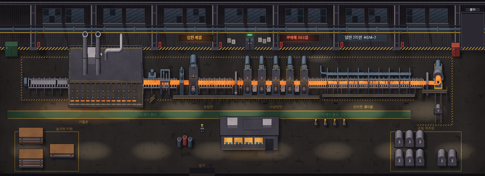
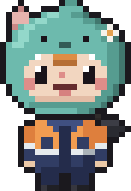
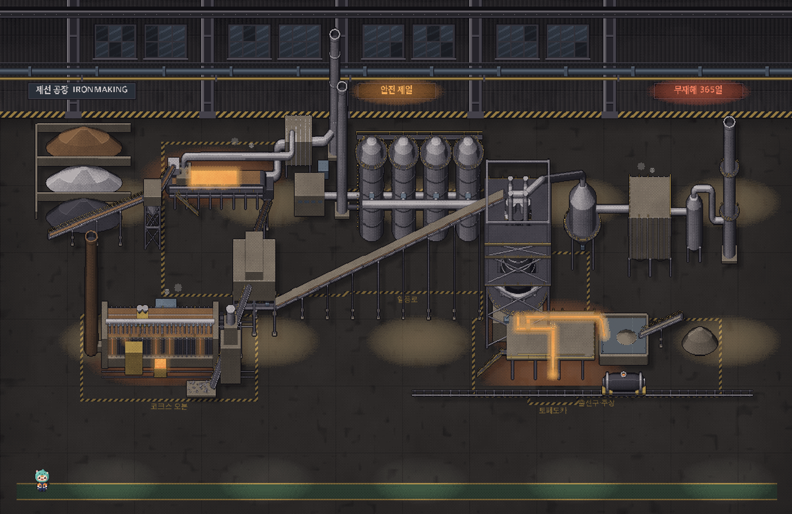
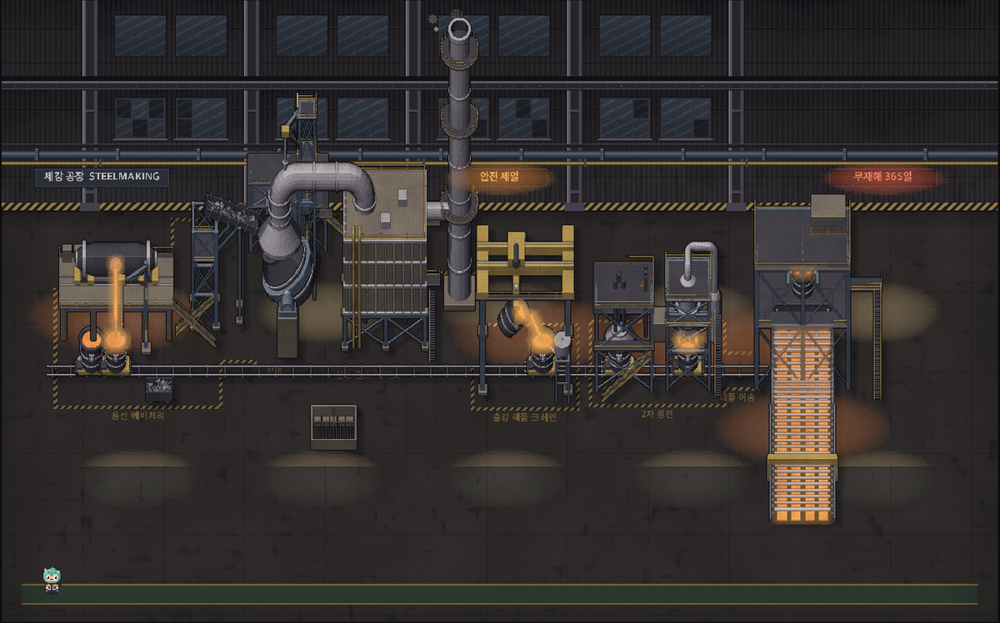
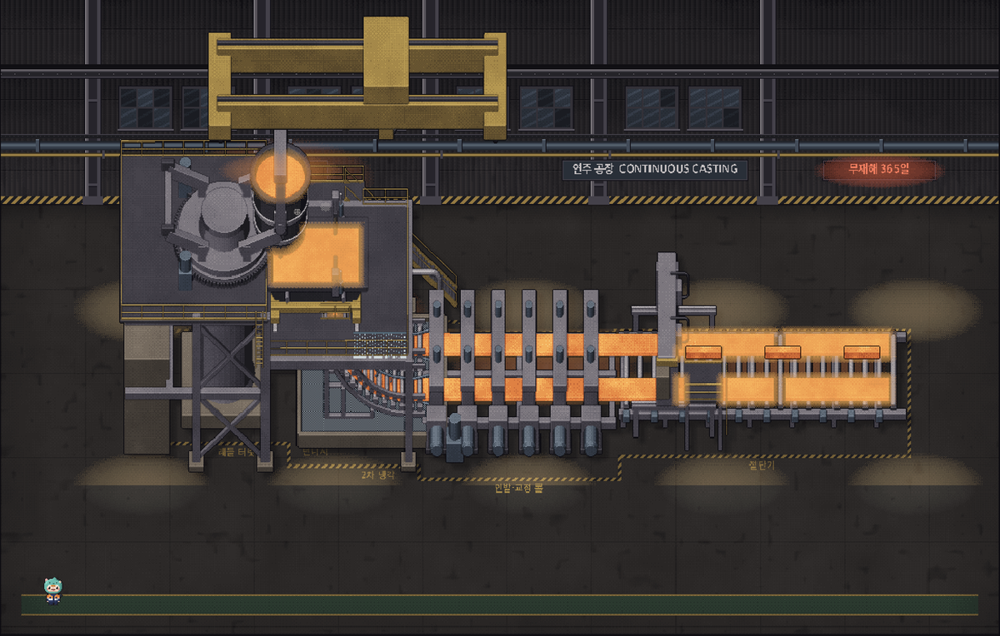
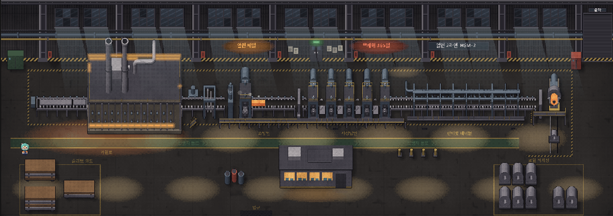

POSCO K-뉴딜 아카데미 내부 해커톤 · 프로젝트 기획서
STEEL MIND
AI Agent들의 회의로 운영하는 제철소 공정 시뮬레이션
해커톤 대주제
AI로 더 안전하고, 멈추지 않고, 더 정확하게 생산하는 제철소를 만들어라.


게임 배경 시안(열간압연 맵). 제선 → 제강 → 연주 → 열간압연 공정별 맵을 만들고, 미션에 쓸 공정은 개발 단계에서 정합니다.
플레이어는 제철소 공정의 운영 책임자입니다. 라인이 돌다 사고 징후가 생기면 AI가 상황에 맞는 선택지를 만들고, 플레이어는 제한 시간 안에 하나를 고릅니다. 결정이 나면 생산·품질·설비·안전 Agent가 저마다의 입장으로 회의를 벌이고, 그 결과가 공장 지표로 이어집니다.
팀 철든신입
박소영(ssoyoum)
양수빈(viiin2)
신원민(won2912)
김다영(cookieimda)
Unity 게임
공정별 맵 · 설비 화면
픽셀아트 캐릭터
AI Agent 4명
생산 · 품질 · 설비 · 안전
결정 뒤 반응 회의
미션 1판
사건 · 제한 시간 선택
결과 등급 S~C·실패
01
해커톤 대주제와 프로젝트 주제
무엇을 만들고, 왜 이 주제인가
해커톤 대주제
AI로 더 안전하고, 멈추지 않고, 더 정확하게 생산하는 제철소를 만들어라.
우리의 답: 프로젝트 주제
"만약 그때 이렇게 했다면?" 제철소의 What-if를 제한 시간 안에 결정하는 게임
AI가 만든 선택지 중 하나를 제한 시간 안에 고르고, 생산·품질·설비·안전 AI Agent의 엇갈린 반응을 겪어 보는 제철소 운영 시뮬레이션 게임
대주제의 세 목표를 한 번의 결정에 모두 담습니다
목표 1더 안전하게사고 징후가 보일 때 생산 압박을 이기고 위험을 먼저 막는 판단. 안전이 무너지면 다른 성과도 소용없습니다.
목표 2멈추지 않고무조건 세우는 것이 답은 아닙니다. 감속·점검으로 라인을 살리면서 위험을 줄이는 길을 찾습니다.
목표 3더 정확하게설비 조건이 흔들리면 제품 품질도 흔들립니다. 불량 없이 만드는 것도 결정의 한 축입니다.
세 목표는 자주 부딪힙니다. 멈추면 안전하지만 생산이 끊기고, 계속 돌리면 품질과 안전이 흔들립니다. STEEL MIND는 이 셋을 동시에 지키는 판단을 연습하는 게임입니다.
이 주제를 고른 이유
1안전·가동·품질은 따로 풀 수 없는 문제입니다.이상 징후와 납기 압박이 겹치면 "조금만 더 돌리자"는 판단이 사고와 불량으로 이어집니다.
2이 판단은 현장에 나가기 전에는 연습할 곳이 없습니다.신입사원은 부서 간 이해관계가 부딪히는 결정을 해 볼 기회가 없습니다. 게임에서는 실패해도 됩니다.
3AI가 늘어날수록 사람의 최종 판단이 더 중요해집니다.AI끼리 의견이 갈릴 때, 그럴듯한 제안 중에서 세 목표를 지키는 길을 고르는 연습이 필요합니다.
4우리 팀이 이틀 안에 끝까지 만들 수 있습니다.배운 Agent 설계·프롬프트·API 연동을 그대로 쓰고, 동작하는 시안과 배경 그림이 이미 있습니다.
프로젝트 개요
| 항목 | 내용 |
|---|
| 대상 | 제철소 공정과 부서 간 이해관계를 처음 접하는 신입사원·교육생 |
| 형태 | Unity 게임(제선·제강·연주·열간압연 공정별 맵), 미션 1판 단위 |
| 목표 | 11/10 02:00까지 미션 1판(공정은 개발 단계에서 확정)을 사건부터 결과 등급·AI 진단까지 완성 |
02
역할 분담
누가 무엇을 맡는가
한 사람이 한 영역을 끝까지 책임지고, 영역마다 최종 결정권자를 둡니다. 각자 무엇을 누구에게 넘기는지까지 정해 두어 통합 때 막히지 않게 합니다.
- 기획서와 플레이 흐름
- Agent 페르소나와 회의 반응 설계
- JSON 형식 정의와 통합
- Unity로 메인 게임 화면 제작
- 제선·제강·연주·압연 공정·설비·사건 화면 설계
- 공정 가동·설비 이상 표현, 지표·사건·선택 UI
신원민 (won2912)
시나리오 · 규칙 엔진
- 사건과 행동 목록 설계
- 지표 계산·등급·밸런스
- 공정별 사건 데이터
김다영 (cookieimda)
AI 연동 · 결과 화면
- LLM API 선택지 생성
- AI 진단 로그
- 결과 화면
03
협업 방식과 추진 일정
형식을 먼저 맞추고, 정해진 시각에 합칩니다
네 영역이 동시에 개발되므로 "무엇을 어떤 형식으로 주고받는지"를 가장 먼저 정합니다. 이후에는 정해진 시각마다 합쳐 보고, 문제는 그 자리에서 풉니다.
① 형식 먼저 합의 (12:00 전)시나리오, Agent 대사, 결과 데이터, 진단 로그의 JSON 형식을 schemas/에 정합니다. 바꿀 때는 받는 사람과 먼저 합의합니다.
② 가짜 데이터로 동시 개발형식이 정해지면 각자 가짜 데이터로 바로 시작합니다. 누가 늦어도 다른 사람의 작업이 멈추지 않습니다.
③ GitHub 브랜치와 상호 검토팀 저장소에서 폴더별 브랜치(frontend/…, engine/…, llm/…)로 작업하고, 다른 팀원 1명 이상이 승인한 Pull Request만 합칩니다.
④ 결정권자를 정해 둠화면은 viiin2, 점수·밸런스는 won2912, AI 연동은 cookieimda, 기획·형식과 통합 순서는 팀장 ssoyoum이 최종 결정합니다. 의견이 갈리면 결정권자가 정합니다.
⑤ 짧은 점검 회의18:00, 22:00, 01:00에 10분씩 모여 진척과 막힌 점을 공유합니다. 30분 넘게 막히면 바로 팀 채팅방에 알립니다.
⑥ 과정 기록Pull Request 설명에 무엇을, 왜 바꿨는지와 부딪힌 문제를 어떻게 풀었는지 남깁니다. 결과보고서의 근거가 됩니다.
추진 일정
| 시간 | 할 일 | 결과 |
|---|
| 11/9 09:30~12:00 | 기획 확정, JSON 형식 합의, 기능별 담당 확정 | 기획서 (13:30 제출) |
| 11/9 13:10~18:00 | 영역별 개발: 화면·UI / 시나리오·규칙 엔진 / AI 선택지·진단 / Agent 회의 | 영역별 단독 동작 |
| 11/9 18:00~22:00 | 통합: 공정 가동 → 사건 → AI 선택지 → 회의 → 결과까지 연결, 다른 공정 맵·사건 데이터 추가 | 한 판이 끝까지 도는 빌드 |
| 11/9 22:00~24:00 | 밸런스 조정과 수치 고정, AI 선택지·진단 API 연결과 기본 문장 대체 확인 | 최종 빌드 |
| 11/10 00:00~02:00 | 소스코드 정리, 결과보고서·발표자료 작성, 시연 영상 녹화 | 02:00 결과물 제출 |
| 11/10 14:00~18:00 | 본선 진출 시 15~20분 발표와 시연 | 최종 발표 |
04
해결하려는 문제
공장의 결정은 늘 누군가의 손해를 만듭니다
제철소에서는 생산, 품질, 설비, 안전 부서가 각자 옳은 말을 합니다. 그런데 그 말들은 자주 부딪칩니다. 앞으로 각 부서 옆에 AI Agent가 붙으면, 사람은 AI들끼리 갈린 의견을 듣고 결정해야 합니다.
현장의 문제설비 온도가 오르는데 출하할 주문이 남았습니다. 속도를 유지하면 납기는 지키지만 설비와 안전이 위험하고, 멈추면 생산이 줄어듭니다.
교육의 문제신입사원은 이런 부서 간 트레이드오프를 직접 판단해 볼 기회가 거의 없습니다. 교재로는 "무엇을 잃는지"가 잘 와닿지 않습니다.
AI 시대의 문제AI Agent가 늘수록 AI끼리 의견이 갈리는 상황도 늘어납니다. 그럴듯한 AI 제안을 비교해 사람이 결정하는 연습이 필요합니다.
그래서 만듭니다: STEEL MIND
플레이어가 제철소 운영 책임자가 되어, AI가 만든 선택지 중 제한 시간 안에 결정하고 부서별 AI Agent의 엇갈린 반응을 겪는 게임입니다. AI는 선택지를 만들고, 사람이 판단하고, 결과는 규칙대로 계산됩니다. 같은 선택은 언제나 같은 결과를 냅니다.
이 게임이 바꾸려는 것
| 지금 | STEEL MIND를 하고 나면 |
|---|
| 부서 간 충돌을 말로만 배움 | 한 번의 결정이 네 지표를 동시에 바꾸는 것을 숫자와 화면으로 확인 |
| AI 제안을 그대로 믿기 쉬움 | AI끼리 다른 말을 할 때 근거를 비교해 직접 결정 |
| 안전을 여러 목표 중 하나로 봄 | 안전이 무너지면 다른 성과가 의미 없다는 것을 결과로 경험 |
대주제의 세 목표가 게임 규칙이 됩니다
더 안전하고안전 지수에 하한선(60)을 둡니다. 다른 점수가 아무리 높아도 안전이 무너지면 미션 실패입니다.
멈추지 않고속도 유지·감속·정지 사이에서 고릅니다. 무리하게 돌리면 설비가 달아올라 다음 사건이 더 위험해집니다.
더 정확하게설비 조건이 흔들리면 제품 품질도 흔들립니다. 품질 Agent가 이 영향을 짚습니다.
05
게임 화면
공정 라인을 한 화면에서 운영합니다
화면 전체가 하나의 공정 라인입니다. 제선 → 제강 → 연주 → 열간압연 공정마다 맵이 있고, 사건은 공장의 실제 위치에서 터집니다. 아래는 열간압연 맵 시안이며, 미션에 쓸 공정은 개발 단계에서 정합니다.
1슬라브 야드
2가열로
3조압연
!사건 예시 · 사상압연
!사건 예시 · 런아웃 테이블
6코일 적치장
7운영실
팀원이 만든 배경 시안 위에 구역을 표시했습니다. 주황색이 MVP 미션의 사건 위치입니다.
공장 구역과 게임 속 역할 열간압연 맵 예시
| 구역 | 게임에서 |
|---|
| 1 슬라브 야드 | 원료 슬라브가 투입됩니다 |
| 2 가열로 | 슬라브를 데웁니다. 확장 사건: 전력 피크 |
| 3 조압연 | 슬라브를 1차로 얇게 폅니다 |
| ! 사상압연 | 사건 예시: 설비 온도 상승 |
| ! 런아웃 테이블 | 사건 예시: 작업자 위험 구역 진입 |
| 6 코일 적치장 | 생산한 코일이 쌓입니다(생산량 표시) |
| 7 운영실 | 플레이어의 자리. Agent 회의가 열립니다 |
화면 구성
상단 지표판생산량 · 품질 · 안전 · 비용 효율 4개 지표와 생산량. 안전 막대에는 하한선(60)이 표시됩니다.
공장 화면라인이 실시간으로 움직이고, 사건이 생긴 설비가 깜빡입니다. 설비 상태 게이지와 라인 속도가 함께 보입니다.
사건 패널제한 시간 타이머와 AI가 만든 선택지 3개(키보드 1·2·3). 결정 뒤 Agent 회의 말풍선이 이어집니다.
캐릭터 시안을 Agent별 색으로 구분(생산 · 품질 · 설비 · 안전)
06
플레이 시나리오
한 판은 이렇게 흘러갑니다
사건이 터지면 AI가 선택지를 만들고, 플레이어가 결정하면 Agent들이 그 결정을 두고 회의합니다. 사건마다 이 흐름을 반복한 뒤 결과를 받습니다.
● 공정 정상 가동 · 속도 100%
1공정 가동원료가 설비를 지나 제품으로 쌓이고, 생산량이 올라갑니다.
LEVEL 1 · 설비 온도 상승설비 온도 ▲
2사건 발생이상이 생긴 설비가 깜빡이고 경보가 울립니다. 라인이 느려집니다.
14
AI 선택지 상황에 맞춰 매번 다르게 만들어집니다
1 그대로 가동2 감속 후 점검3 정지·구역 통제
3AI 선택지 · 제한 시간 결정LLM API가 선택지 3개를 만듭니다. 시간이 다 되면 가장 위험한 기본 행동이 실행됩니다.
생산 · 불만감속이요? 오늘 주문량은 어떻게 맞춥니까.
설비 · 찬성잘하셨어요. 더 상하기 전에 잡았습니다.
안전 · 경고주변 인원 통제도 같이 해 주세요.
4Agent 회의결정이 나면 페르소나가 다른 Agent들이 찬성하거나 불만을 터뜨립니다.
생산량−5
품질+3
안전+6
비용 효율−6
라인 속도 55% · 설비 온도 안정
5결과 반영규칙 엔진이 지표를 바꾸고, 공장 화면도 달라집니다.
A
종합 80.6
안전을 지키면서 종합 80점 이상을 냈습니다.
선택 기록 · AI 진단 로그
6결과 등급사건이 모두 끝나면 등급·선택 기록과 AI 진단 로그를 보여 줍니다.
회의에서 손해가 드러납니다같은 결정에도 생산 Agent는 불만을, 안전 Agent는 찬성을 말합니다. 무엇을 지키려고 누구의 손해를 택했는지 바로 보입니다.
안전은 점수가 아니라 조건입니다사람이 있는 구역을 그대로 돌리는 선택은 안전을 하한선 아래로 떨어뜨려 미션 실패로 끝납니다.
07
미션 설계 방식
사건 하나는 이렇게 짜여 있습니다
어느 공정이든 사건은 같은 틀로 만듭니다. 공정과 사건 내용은 개발 단계에서 정하고, 수치는 게임 밸런스용 가상 값입니다.
| 구성 | 내용 |
|---|
| 상황 | 어떤 설비에서 어떤 징후가 보이는지, 남은 생산 목표 |
| AI 선택지 | LLM API가 규칙 엔진의 행동 목록에서 3개를 골라 상황에 맞는 문장으로 씁니다 |
| 제한 시간 | 사건마다 제한 시간을 둡니다. 넘기면 가장 위험한 기본 행동이 실행됩니다 |
| Agent 회의 | 결정 뒤 생산·품질·설비·안전 Agent가 페르소나대로 찬성·불만·경고를 말합니다 |
| 지표 변화 | 행동마다 정해 둔 변화값을 규칙 엔진이 적용합니다 |
행동 목록 예시 · 방향만 표시
| 행동 | 생산량 | 품질 | 안전 | 비용 효율 | 어울리는 상황 |
|---|
| 그대로 가동 | ▲ | ▼ | ▼▼ | ▲ | 납기가 급할 때. 사고 위험이 커짐 |
| 감속 후 점검 | ▼ | ▲ | ▲ | ▼ | 이상 징후가 아직 작을 때 |
| 정지·구역 통제 | ▼▼ | ▲ | ▲▲ | ▼▼ | 사람이 위험할 때 |
예시 · 설비 온도 상승설비 온도가 기준보다 빠르게 오릅니다
출하할 주문이 남은 상황에서 플레이어가 "감속 후 점검"을 골랐다면
생산 · 불만감속이요? 오늘 주문량은 누가 책임집니까.
설비 · 찬성잘하셨어요. 설비가 더 상하기 전에 잡았습니다.
안전 · 경고좋습니다. 다음엔 주변 인원 통제도 같이 해 주세요.
시작값과 변화값은 개발 중 밸런스를 맞춰 정합니다.
08
공정별 미션 구성
쇳물부터 코일까지, 공정 4개를 미션으로
제철소의 큰 흐름인 제선 → 제강 → 연주 → 압연을 미션 4개로 나눕니다. 공정마다 맵·설비·사건은 다르고, Agent 4명(생산·품질·설비·안전)과 점수 규칙은 그대로 씁니다. 사건과 선택지는 JSON 데이터라 공정을 늘려도 엔진은 바뀌지 않습니다.

제선 · 고로철광석과 코크스를 녹여 쇳물(용선)을 만듭니다.
고로 · 열풍로 · 출선구

제강 · 전로쇳물의 탄소와 불순물을 빼 강(용강)으로 만듭니다.
전로 · 산소 랜스 · 레들

연주 · 연속주조용강을 틀에 부어 굳혀 슬라브로 만듭니다.
턴디시 · 주형 · 냉각대

열간압연슬라브를 늘려 얇은 코일로 감습니다.
가열로 · 사상압연기 · 런아웃 테이블
미션별 사건 설계
| 공정 | 사건 1 | 사건 2 | 부딪히는 Agent | 현재 |
|---|
| 제선 | 고로 노 안 온도 하강(식어 굳을 징후) | 출선구 주변 고열 작업 중 쇳물 분출 | 생산 ↔ 설비·안전 | 맵 시안 |
| 제강 | 전로 쇳물 넘침(슬로핑) 징후 | 산소 랜스 냉각수 누수 | 생산 ↔ 품질·안전 | 맵 시안 |
| 연주 | 주형 아래 굳은 껍질이 찢어질 징후 | 턴디시 용강 온도 저하 | 생산 ↔ 품질·설비 | 맵 시안 |
| 열간압연 | 사상압연기 롤 온도 상승 | 작업자 위험 구역 진입 | 생산 ↔ 설비·안전 | 맵·플레이 시안 |
공정별 사건은 기획 단계의 후보입니다. 선택지와 변화값은 8쪽의 사건 틀과 같은 형식으로 정하고, 수치는 게임용 가상 값입니다.
만드는 순서
① 02:00까지 필수미션에 쓸 공정 하나를 골라 1판을 사건부터 결과·AI 진단까지 완성합니다.
② 같은 엔진에 추가다른 공정은 맵과 사건 JSON만 더하면 됩니다. 시간 안에 되는 만큼 붙입니다.
③ 못 붙인 공정맵·설비 화면과 사건 설계를 발표에서 보여 주고, 확장 계획(공정 캠페인)으로 이어 설명합니다.
공정 4개를 이으면
앞 공정의 선택이 다음 공정의 출발 상태가 됩니다. 제강에서 서두르면 연주는 불순물이 많은 용강으로 시작하고, 연주에서 품질을 놓치면 열간압연에서 두께가 흔들립니다. "만약 그때 이렇게 했다면?"을 공정 전체로 따라가 보는 구조입니다.
09
핵심 재미와 점수 규칙
정답 없는 선택, 제한 시간, 갈리는 결과
STEEL MIND의 재미는 "누구 말을 들을까"를 고민하는 순간에서 나옵니다. 그래서 Agent 시나리오를 다음 네 가지 원칙으로 설계합니다.
① 모든 Agent가 맞는 말을 한다틀린 말을 하는 Agent는 없습니다. 각자 자기 부서 목표에서는 옳은 근거를 댑니다. 그래서 선택이 고민됩니다.
② 공짜 선택지는 없다세 선택지 모두 최소 한 지표는 손해를 봅니다. 무엇을 지키고 무엇을 내줄지 정하는 것이 플레이입니다.
③ 시간이 압박한다제한 시간 안에 정해야 합니다. 고민만 하다 시간을 넘기면 가장 위험한 기본 행동이 실행됩니다.
④ 결정 뒤에 회의가 열린다고른 결정을 두고 Agent들이 찬성·불만·경고를 말합니다. 누구의 손해로 무엇을 지켰는지 바로 드러납니다.
지표와 가중치
| 지표 | 시작값 | 가중치 | 담당 Agent |
|---|
| 생산량 | 70 | 30% | 생산 |
| 품질 | 80 | 25% | 품질 |
| 안전 하한 60 | 90 | 35% | 안전 |
| 비용 효율 | 75 | 10% | 설비(정비·정지 비용) |
모든 지표는 0~100 범위로 제한합니다. 종합 점수 = 지표 × 가중치의 합.
결과 등급
| 등급 | 조건 |
|---|
| 실패 | 안전이 60 미만(종합 점수와 무관) |
| S | 종합 90 이상 |
| A | 종합 80 이상 |
| B | 종합 65 이상 |
| C | 안전은 지켰지만 종합 65 미만 |
결말은 고른 행동의 조합으로 갈립니다
| 사건마다 고른 행동 | 결말 경향 |
|---|
| 위험한데도 "그대로 가동" | 안전이 하한선 아래로 떨어져 실패 |
| "감속 후 점검" 위주 | 생산을 조금 내주고 안정을 지켜 A·B |
| "정지·구역 통제" 위주 | 안전은 높지만 생산·비용 손실이 커 B·C |
| 상황에 맞춰 섞어 고름 | 세 목표의 균형을 맞춰 S까지 가능 |
선택지 문장은 AI가 매번 달리 써도 바탕 행동과 변화값은 같아, 결말 기준은 그대로입니다.
AI와 규칙의 역할 분리
AI(LLM API)가 하는 일사건마다 행동 목록에서 선택지 3개를 골라 상황에 맞는 문장으로 쓰고, 판이 끝나면 진단 로그를 씁니다. 점수는 바꾸지 않습니다.
규칙 엔진이 하는 일플레이어가 고른 선택지에 정해진 변화값을 더하고 등급을 매깁니다. AI는 점수와 공장 상태를 바꾸지 않으므로 같은 선택은 언제나 같은 결과입니다.
10
주요 기능
MVP 핵심 기능 5가지
02:00 제출본에 꼭 넣을 핵심만 정했습니다. 나머지는 시간이 남으면 붙이는 확장으로 둡니다.
| ID | 기능 | 내용 | 담당 |
|---|
| F1 | 공장 화면 | 공정 라인이 돌고, 사건이 난 설비가 깜빡입니다. 선택에 따라 라인 속도와 설비 상태가 바뀝니다. | 양수빈(viiin2) |
| F2 | 사건과 AI 선택지 | 사건이 터지면 LLM API가 상황에 맞는 선택지 3개를 만듭니다. 제한 시간 안에 고르지 않으면 가장 위험한 기본 행동이 실행됩니다. | 신원민(won2912)
김다영(cookieimda) |
| F3 | Agent 회의 | 결정이 나면 페르소나가 다른 Agent들이 찬성하거나 불만을 터뜨리며 회의하는 장면이 나옵니다. | 박소영(ssoyoum)
양수빈(viiin2) |
| F4 | 지표 계산 | 규칙 엔진이 고른 행동의 변화값을 지표 4개에 적용합니다. AI는 점수를 바꾸지 않습니다. | 신원민(won2912) |
| F5 | 결과 화면·AI 진단 | 등급, 지표 변화, 선택 기록과 함께 LLM API가 쓴 진단 로그를 보여 줍니다. | 김다영(cookieimda) |
이번에 넣지 않는 것(시간이 남으면 추가)
이어지는 상태앞 사건의 선택이 다음 사건의 출발 상태를 바꾸는 규칙, 공정 4개를 잇는 캠페인
Agent·난이도 추가에너지·물류·환경 Agent, Agent 2~7명 난이도
학습 기록플레이 기록으로 "자주 희생한 지표" 돌아보기
실제 설비 제어, 실시간 산업 데이터 연결, 멀티플레이는 다루지 않습니다.
11
시스템 구성
사건 → AI 선택지 → 결정 → 규칙 계산 → 회의·진단
시나리오 데이터가 사건과 행동 목록을 정하고, LLM API가 그 안에서 선택지를 만들고, 플레이어가 고르면 규칙 엔진이 계산합니다. 결정 뒤에는 Agent 회의가, 판이 끝나면 AI 진단이 이어집니다. 각 단계는 정해진 JSON 형식으로만 주고받습니다.
시나리오 데이터사건, 위치, 행동 목록과 변화값
→
AI 선택지LLM API가 행동 3개를 골라 문장으로
→
게임 화면공장, 말풍선, 타이머, 선택지
→
플레이어제한 시간 안에 선택
→
규칙 엔진변화값 적용, 등급 계산
→
회의·결과Agent 반응 회의, 등급, AI 진단 로그
AI 선택지 형식
{
"event": "equipment_overheat",
"choices": [
{ "action": "keep_running", "text": "그대로 돌리며 온도를 지켜본다" },
{ "action": "slow_and_check", "text": "속도를 낮추고 냉각부터 확인한다" },
{ "action": "stop_and_lock", "text": "라인을 멈추고 구역을 통제한다" }
]
}
action은 행동 목록에 있는 ID여야 하고, 효과값은 규칙 엔진이 정합니다. 형식이 틀리거나 호출이 실패하면 기본 선택지 문장을 씁니다. 진단 로그도 같은 방식으로 받습니다.
지켜야 할 경계
- LLM은 선택지 문장과 진단 로그만 만듭니다. 점수·상태를 바꾸는 것은 규칙 엔진뿐입니다.
- API가 늦거나 실패해도 기본 선택지·기본 진단으로 게임은 멈추지 않습니다.
- 모든 수치는 게임용 가상 값이며 실제 제철소 기준이 아님을 화면에 표시합니다.
- 실제 설비·실시간 산업 데이터와 연결하지 않습니다.
기술 구성
| 영역 | 구성 | 담당 |
|---|
| 게임 화면·UI | Unity 메인 게임 화면, 공정별 맵·설비·캐릭터 이미지, 지표·사건·선택 UI | 양수빈(viiin2) |
| 시나리오·규칙 엔진 | 사건·선택지·변화값 JSON, 점수 계산과 등급, 사건 간 이어지는 상태 | 신원민(won2912) |
| AI 선택지·진단 | LLM API로 사건별 선택지 문장과 결과 진단 로그 생성, 형식 검사, 실패 시 기본 문장 | 김다영(cookieimda) |
| 결과 화면 | 등급, 지표 변화, 선택 기록, Agent별 목표 달성 | 김다영(cookieimda) |
| Agent 회의·통합 | Agent 페르소나와 회의 반응 규칙, 모듈 간 JSON 형식, 통합 | 박소영(ssoyoum) |
12
기대 효과와 확장
신입 교육용 의사결정 훈련 도구로
STEEL MIND는 실제 공정을 판단하는 도구가 아닙니다. 부서 간 이해관계와 AI와 함께 결정하는 방식을 몸으로 익히는 교육용 게임을 목표로 합니다.
부서 간 시야한 번의 결정이 생산·품질·설비·안전에 동시에 영향을 준다는 것을 숫자와 화면으로 확인합니다.
AI와 함께 결정하기AI가 그럴듯한 근거를 대도 최종 판단과 책임은 사람에게 있다는 점을 체험합니다.
안전 우선 습관안전이 무너지면 다른 성과가 의미 없다는 규칙을 게임 결과로 경험합니다.
확장 계획
| 확장 | 내용 |
|---|
| 사건 추가 | 가열로 전력 피크(에너지 Agent), 코일 출하 지연(물류 Agent), 배출 기준(환경 Agent) |
| 공정 캠페인 | 제선 → 제강 → 연주 → 압연 미션을 이어 앞 공정 결과가 다음 공정의 출발 상태가 되게 합니다. 사건과 선택지가 데이터로 분리되어 교육 담당자가 추가할 수 있습니다 |
| 난이도 | Easy(Agent 2~3명) → Hard(Agent 6~7명, 시간·예산 제약) |
| 교육 피드백 | 플레이 기록을 모아 "어떤 지표를 자주 희생했는지" 돌아보기 |
심사 항목별 준비
| 심사 항목 | 준비하는 것 |
|---|
| 참여 태도 및 몰입도 | 기획부터 02:00 제출까지 전원 참여, 18:00·22:00 시점마다 진척 공유 |
| 팀워크 및 협업 | 영역 간 JSON 형식을 먼저 합의하고, Pull Request를 서로 검토해 합침 |
| 아이디어 및 창의성 | AI가 만든 선택지로 결정하고, 페르소나가 다른 Agent들이 그 결정을 두고 회의하는 게임 구조 |
| 문제 이해 및 설계 | 대주제의 세 목표(안전·무정지·정확)와 부서별 목표 충돌을 사건·선택지·지표로 옮기고, AI와 규칙 엔진의 역할을 분리 |
| 실행력 및 진척도 | 22:00까지 한 판이 끝까지 도는 빌드, 02:00까지 제출물 4종 |
| 결과물 완성도 | 같은 선택은 같은 결과, 선택마다 달라지는 공장 화면과 등급, 시연 영상 |
| 현업 적용 가능성 | 신입 교육용 확장 구조, 가상 수치라는 한계 명시 |
한 문장으로
"STEEL MIND는 AI Agent들이 각자의 목표로 의견을 내는 제철소에서, 사람이 제한 시간 안에 더 안전하고, 멈추지 않고, 더 정확한 길을 골라 보는 게임입니다."